Trouver des entreprises, les organiser et leur proposer un site web
De Google Maps à la proposition envoyée : rechercher, trier, enregistrer vos prospects, écrire des propositions, créer des maquettes de page d’accueil et exporter.
Version1.0
Date15 novembre 2026
PublicUtilisateurs et administrateurs
Sommaire
Avant de commencer vocabulaire de l’interface
Se connecter compte, invitation, approbation
Lancer une recherche lien Google Maps ou mot-clé
Lire et trier les résultats onglets, tri, filtres, colonnes
La fiche d’une entreprise contacts, présence en ligne
Enregistrer dans une collection sélection, collections
Travailler ses prospects statuts, tags, notes, actions groupées
Écrire une proposition e-mail ou WhatsApp
Créer une maquette de page d’accueil IA, aperçu, partage
Exporter vers Excel ou CSV lignes, colonnes, règles
LeadFinder trouve des entreprises sur Google Maps (hôtels, restaurants, salons de coiffure…), repère celles qui n’ont pas de site web et vous aide à les démarcher. L’interface est en anglais ; les propositions et les maquettes sont disponibles en français et en anglais.
Vocabulaire de l’interface
À l’écran
Signification
New search
Lancer une nouvelle recherche
Searches
Historique de vos recherches et de leurs résultats
Collections
Vos listes de prospects enregistrés
Homepage concepts
Maquettes de page d’accueil générées pour vos prospects
Settings
Vos paramètres (signature des propositions)
Admin
Administration (visible seulement par les administrateurs)
No website / Has website
Sans site web / Avec site web
Lead, Lead status
Prospect, statut du prospect
Proposal
Proposition commerciale (e-mail ou message WhatsApp)
Export
Télécharger en Excel (.xlsx) ou CSV
Bandeau jaune « Sample data mode »
Tant que l’administrateur n’a pas ajouté de clé Google, l’application fonctionne avec des données d’exemple : des entreprises fictives mais réalistes (sites en .example), pratiques pour découvrir l’outil. Ne les contactez pas : elles n’existent pas. Les captures d’écran de ce guide ont été réalisées dans ce mode.
Les règles que suit LeadFinder
Aucune donnée inventée. Une information absente reste vide.
Les e-mails ne sont jamais devinés. Seules les adresses publiées sur le site de l’entreprise elle-même sont reprises, avec la page où elles ont été trouvées. Elles sont marquées « Source-provided » (fournie par la source), jamais « vérifiée ».
Google, uniquement par son API officielle. Conformément aux conditions de Google, les résultats Google sont conservés 24 heures ; dans vos collections, seuls le lien Maps et vos propres informations sont gardés (le nom, le téléphone et l’adresse sont rechargés à l’affichage).
02Se connecter
Chaque personne a son propre compte (e-mail et mot de passe). L’administrateur décide qui peut entrer.
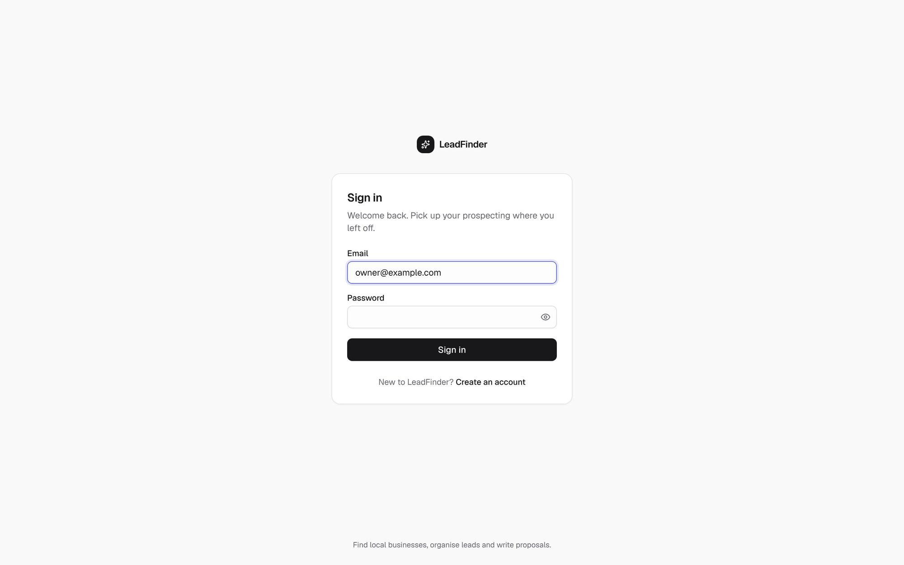
La page de connexion (Sign in).
Trois façons d’obtenir un compte
Vous avez reçu un lien d’invitation
Ouvrez-le : votre e-mail est déjà rempli. Choisissez votre nom et un mot de passe (10 caractères minimum). Votre compte est actif tout de suite.
Inscription libre avec approbation
Sur Create account, inscrivez-vous. Vous arrivez sur une page d’attente jusqu’à ce qu’un administrateur approuve votre compte. Cliquez alors sur Check again.
Premier administrateur
Lors de la mise en ligne, la personne qui installe l’application crée le compte administrateur avec un lien spécial (/sign-up?setup=…), décrit dans la documentation technique.
Mot de passe oublié
L’application n’envoie pas d’e-mails : demandez à votre administrateur de réinitialiser votre mot de passe. Pour vous déconnecter de tous vos appareils, utilisez Settings → Sign out of all devices.
03Lancer une recherche
La façon la plus simple : faire votre recherche sur Google Maps, puis copier le lien dans LeadFinder. L’application lit le mot recherché et la zone de la carte, puis interroge Google à travers son API officielle.
Copier un lien Google Maps
Ouvrez Google Maps et tapez ce que vous cherchez, par exemple hôtel ou salon de coiffure.
Déplacez et zoomez la carte sur la zone qui vous intéresse (un quartier, une ville). La zone visible compte : c’est elle que LeadFinder parcourra.
Copiez l’adresse de la page dans la barre du navigateur. Sur téléphone, le bouton Partager donne un lien court (maps.app.goo.gl/…) qui fonctionne aussi.
Coller le lien dans LeadFinder
Menu New search, onglet Google Maps link : collez le lien.
LeadFinder affiche ce qu’il a compris : Search for “hôtel” · Map area near 6.1434, 1.1658 · ≈49 × 30 km. Si ce n’est pas ce que vous vouliez, refaites le lien sur Google Maps.
Choisissez combien d’entreprises : de 20 à 20 000.
Laissez activé Find emails and social links on their websites pour que LeadFinder visite le site de chaque entreprise et récupère les e-mails et réseaux sociaux publiés.
Vérifiez l’estimation en bas (nombre de requêtes Google et coût approximatif), puis cliquez sur Start search.
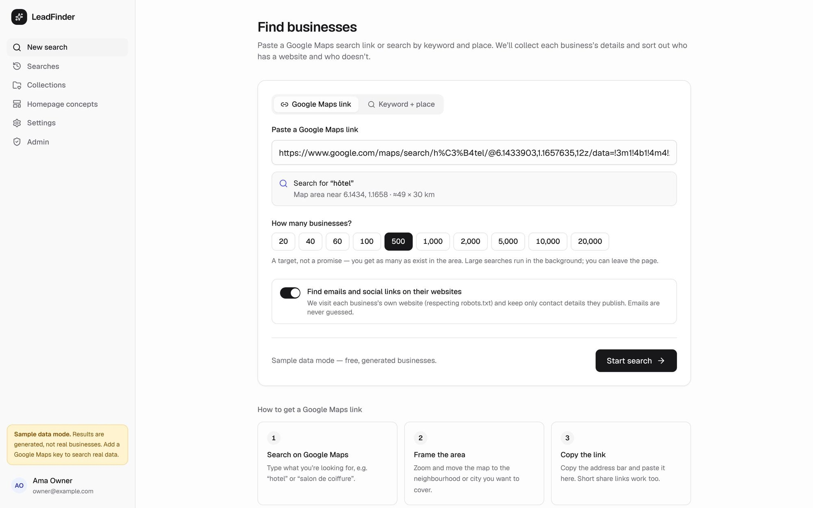
Le lien « hôtel » à Lomé est compris : terme recherché et zone de carte (≈ 49 × 30 km).
Rechercher par mot-clé et lieu
Onglet Keyword + place : indiquez What (par ex. restaurant) et Where (par ex. Accra, Ghana). Pratique quand vous n’avez pas de lien sous la main.
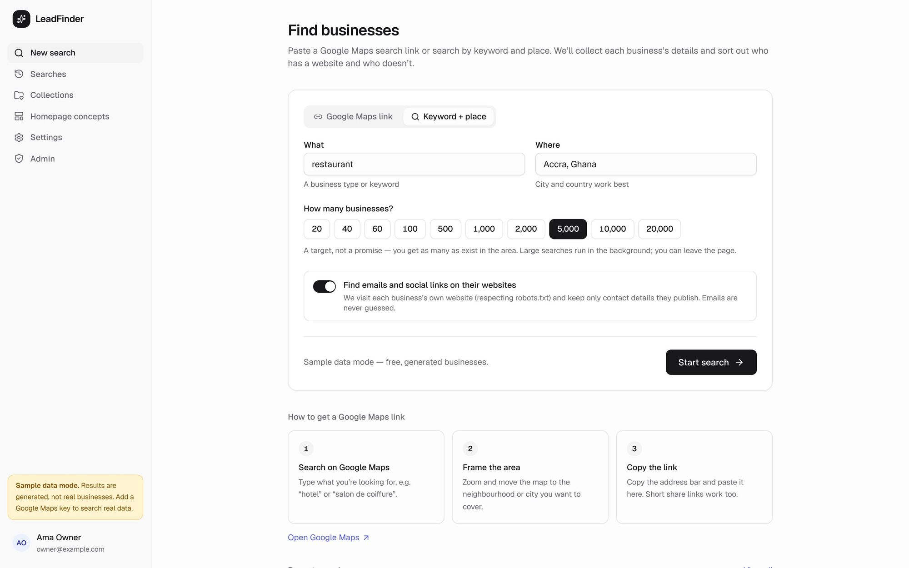
Recherche « restaurant » à Accra, 5 000 résultats demandés.
Le lien d’une seule entreprise
Si vous collez le lien d’une fiche d’entreprise (Google Maps → une entreprise précise), LeadFinder récupère cette entreprise seule, avec ses coordonnées. Le bouton devient Get business details.
Combien de résultats demander ?
Google renvoie au plus ~60 résultats par recherche. Pour aller au-delà, LeadFinder découpe automatiquement la carte en petites zones. Vous obtenez au plus le nombre demandé, et seulement autant d’entreprises qu’il en existe dans la zone.
Chaque requête est facturée par Google à votre organisation. Au-delà d’un certain coût, une fenêtre de confirmation s’affiche avant le lancement.
Votre administrateur peut limiter le nombre maximal de résultats et le volume mensuel par personne.
Suivre la progression
Les grandes recherches tournent en arrière-plan : vous pouvez quitter la page et revenir plus tard (menu Searches). La barre indique le nombre d’entreprises trouvées, puis la vérification des sites web. Les résultats apparaissent au fur et à mesure. Stop arrête la recherche en gardant ce qui a déjà été trouvé.
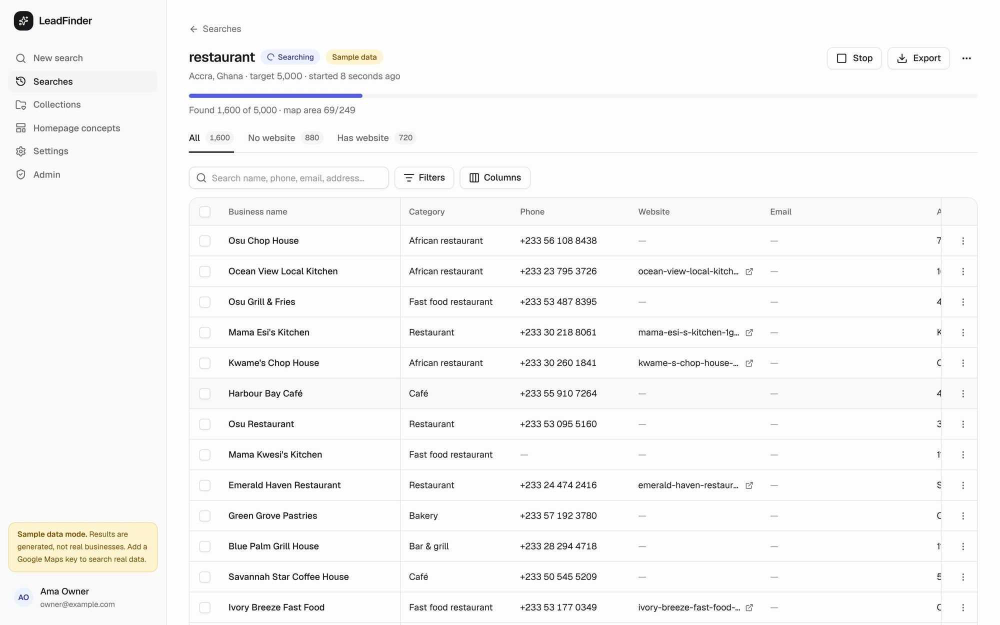
Recherche en cours : 1 600 restaurants trouvés sur 5 000, zone de carte 69/249 parcourue.
04Lire et trier les résultats
Les résultats s’affichent dans un tableau. Trois onglets séparent les entreprises : All (toutes), No website (sans site web) et Has website (avec site web).
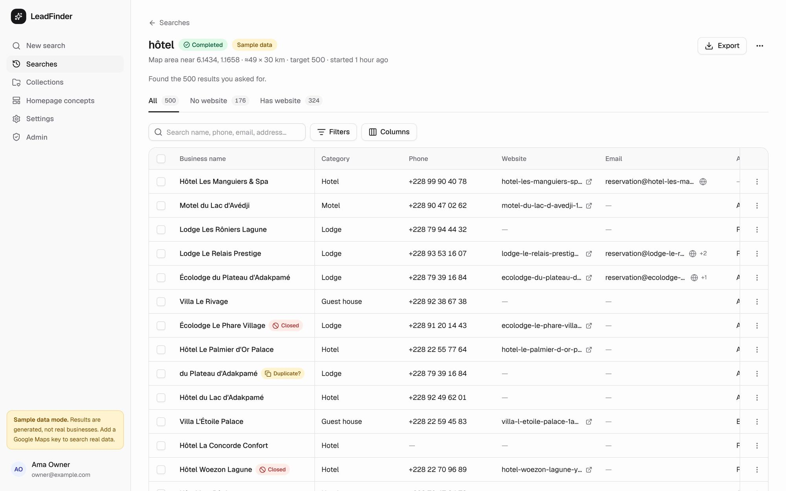
Résultats d’une recherche terminée : 500 hôtels, dont 176 sans site web.
L’onglet « No website » : vos meilleurs prospects
Ces entreprises n’ont aucun site web référencé : ce sont les candidates idéales pour une proposition de site ou une maquette de page d’accueil gratuite.
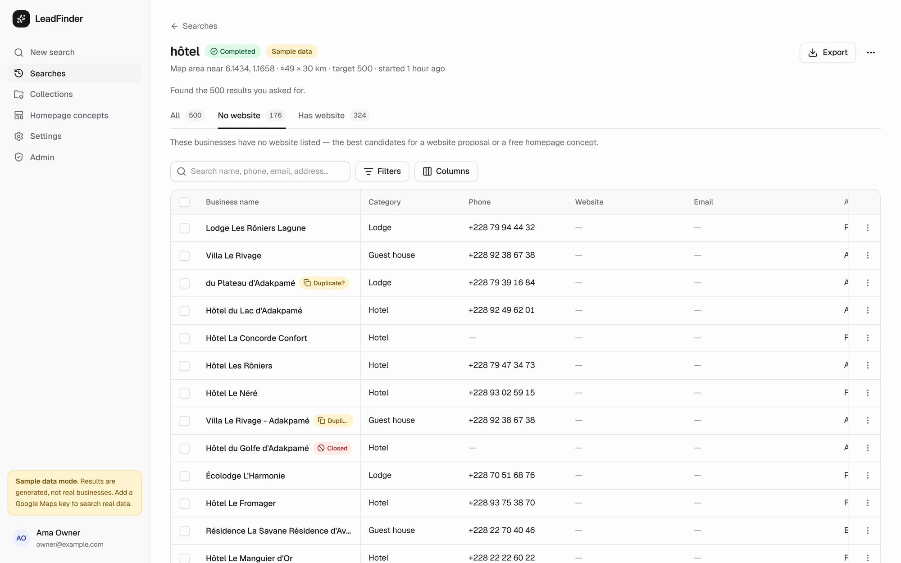
L’onglet « No website ». Remarquez les badges Duplicate? (doublon probable) et Closed (fermé définitivement).
Trier
Cliquez sur un titre de colonne pour trier de A à Z, cliquez encore pour Z à A, une troisième fois pour annuler.
Maj (Shift) + clic sur une deuxième colonne pour un tri secondaire, par exemple catégorie puis nom (jusqu’à 3 colonnes). Sur téléphone, utilisez Add sort.
Les tris actifs apparaissent sous la barre d’outils (Sorted by…) ; la croix les retire.
Rechercher et filtrer
La barre Search name, phone, email, address… cherche dans les noms, téléphones, e-mails, adresses et sites. Le bouton Filters ouvre les filtres :
Contact details : téléphone, e-mail, adresse — Any (peu importe), Has (présent), Missing (absent).
Category : une ou plusieurs catégories, avec le nombre d’entreprises de chacune ; Exclude selected inverse le choix.
City, Rating (note de 0 à 5), Reviews (nombre d’avis), qualité des données, état du site, statut de l’e-mail, masquer les doublons.
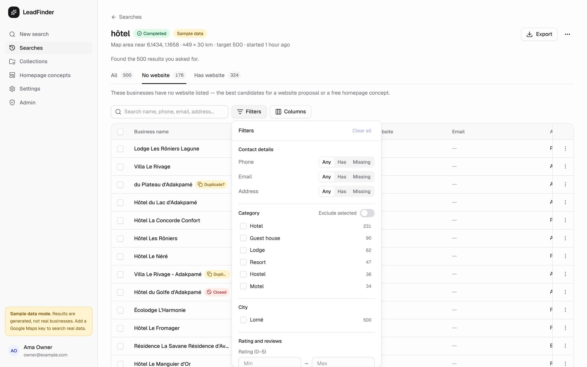
Les filtres : coordonnées, catégories avec leurs effectifs, ville, note et avis.
Les filtres actifs s’affichent sous forme d’étiquettes que vous pouvez retirer une à une, ou toutes avec Clear all.
Choisir les colonnes
Le bouton Columns permet d’afficher, masquer et réordonner les colonnes (flèches haut/bas). Votre choix est mémorisé. Reset to default revient à la disposition d’origine.
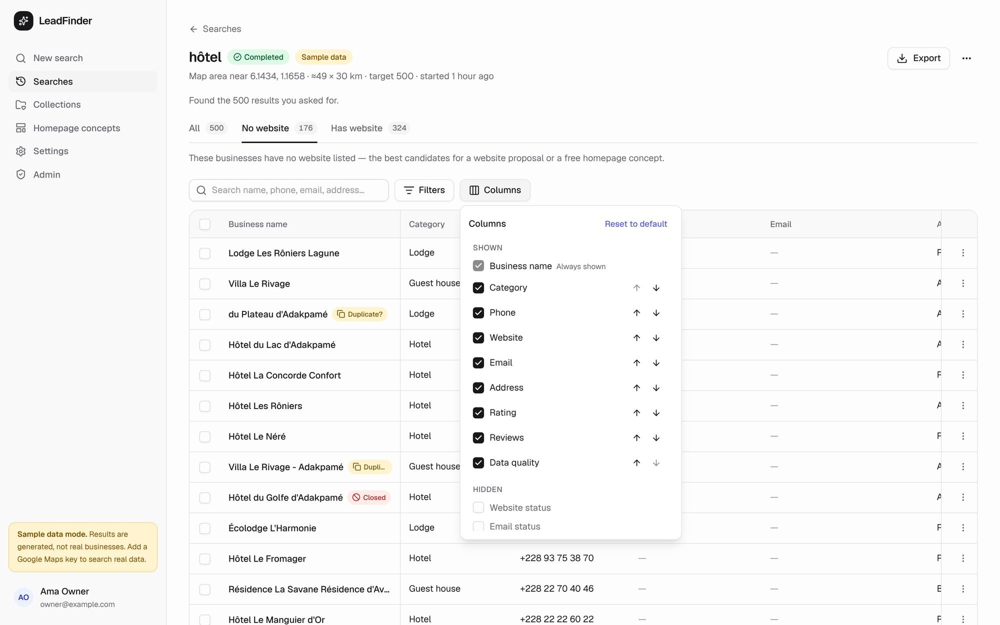
Le choix des colonnes.
Pages et lignes
En bas du tableau : nombre de lignes par page (25, 50 ou 100) et navigation entre les pages. Le tri et les filtres sont conservés d’une page à l’autre et dans l’adresse de la page : vous pouvez la mettre en favori ou la partager avec un collègue.
Résultats Google : 24 heures
Avec de vraies données Google, les résultats d’une recherche sont supprimés automatiquement après 24 heures (conditions de Google). Enregistrez dans une collection les entreprises que vous voulez garder.
05La fiche d’une entreprise
Cliquez sur une ligne (ou appuyez sur Entrée) pour ouvrir sa fiche à droite.
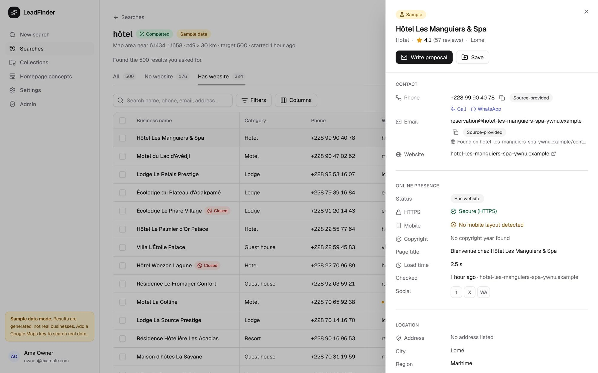
Fiche d’une entreprise : contact, présence en ligne, localisation.
Rubrique
Ce que vous y trouvez
Contact
Téléphone (bouton copier, Call, WhatsApp), e-mails avec la page du site où chacun a été trouvé (« Found on … »), site web.
Adresse, ville, région, pays, coordonnées, lien Google Maps.
Data quality
Informations manquantes, doublon probable.
Provenance
D’où vient chaque donnée et quand elle a été récupérée.
En haut de la fiche : Write proposal, Homepage concept (pour les entreprises sans site) et Save.
Badges
Source-provided : information fournie par la source (Google ou le site de l’entreprise), non vérifiée.
No website : aucun site web référencé.
Duplicate? : probablement la même entreprise qu’une autre ligne (même téléphone, même site ou nom très proche au même endroit).
Not stored (dans une collection) : donnée Google qui ne peut pas être conservée ; elle est rechargée en direct quand c’est possible.
06Enregistrer dans une collection
Une collection est une liste de prospects que vous gardez et suivez : par exemple « Hôtels de Lomé sans site web ».
Sélectionner des entreprises
Cochez les lignes voulues. La case de l’en-tête sélectionne toute la page.
Après avoir coché la page entière, LeadFinder propose Select all N matching results pour sélectionner tous les résultats qui correspondent aux filtres (jusqu’à 20 000).
Maj + clic sur une case sélectionne toute une plage de lignes.
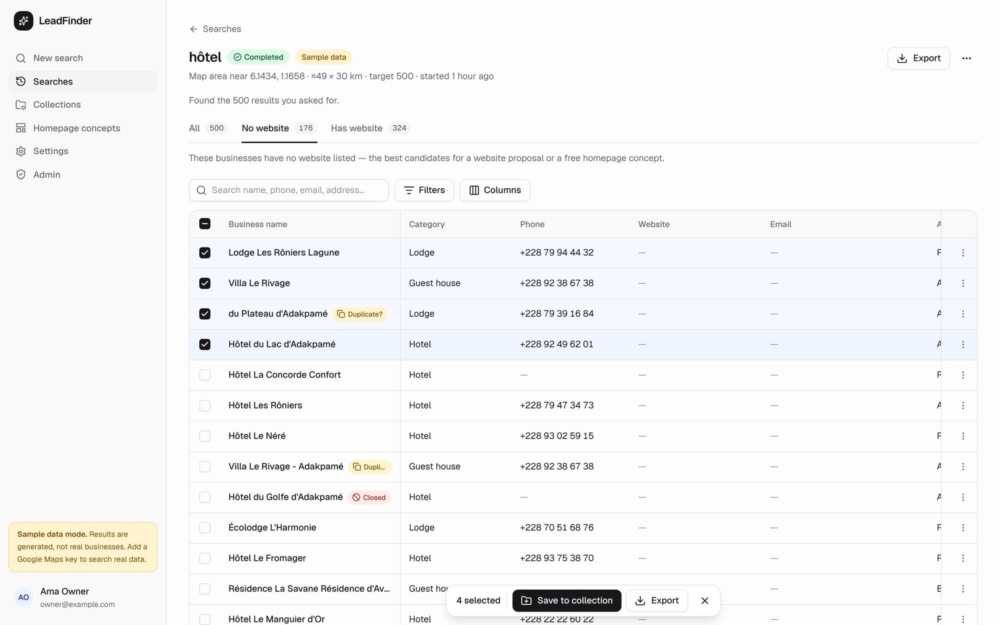
Quatre entreprises sélectionnées : la barre de sélection propose « Save to collection » et « Export ».
Enregistrer
Cliquez sur Save to collection, choisissez une collection existante ou New collection, donnez-lui un nom, puis Save. Les entreprises déjà présentes ne sont pas ajoutées deux fois.
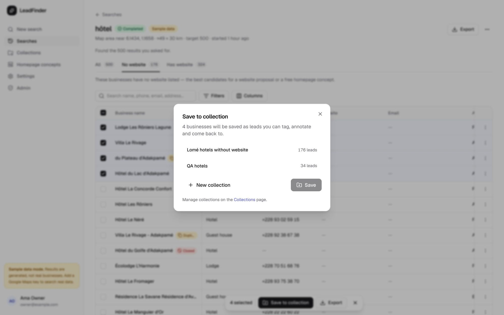
Choix de la collection.
Pour une seule entreprise : menu ⋮ au bout de la ligne → Save to collection.
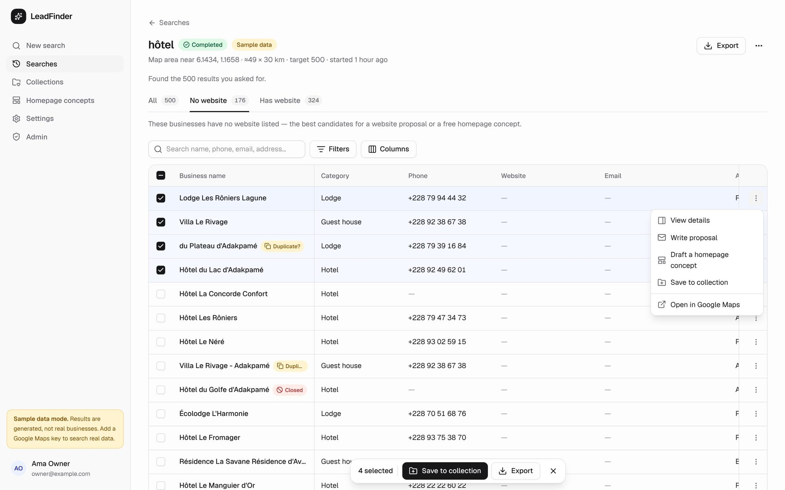
Le menu d’une ligne : détails, proposition, maquette, enregistrement, Google Maps.
07Travailler ses prospects
Le menu Collections affiche vos listes avec le nombre de prospects et leur répartition par statut. Ouvrez-en une pour la travailler.
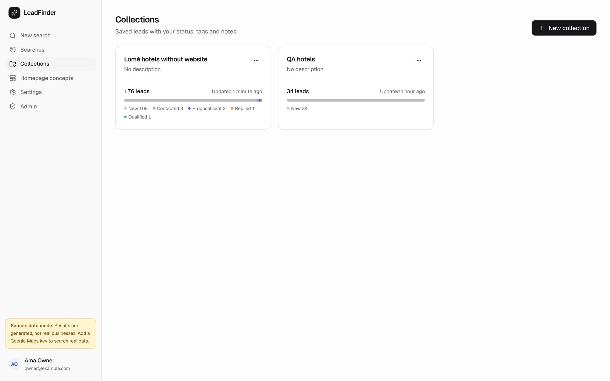
Vos collections. Le menu ⋮ permet de renommer ou supprimer.
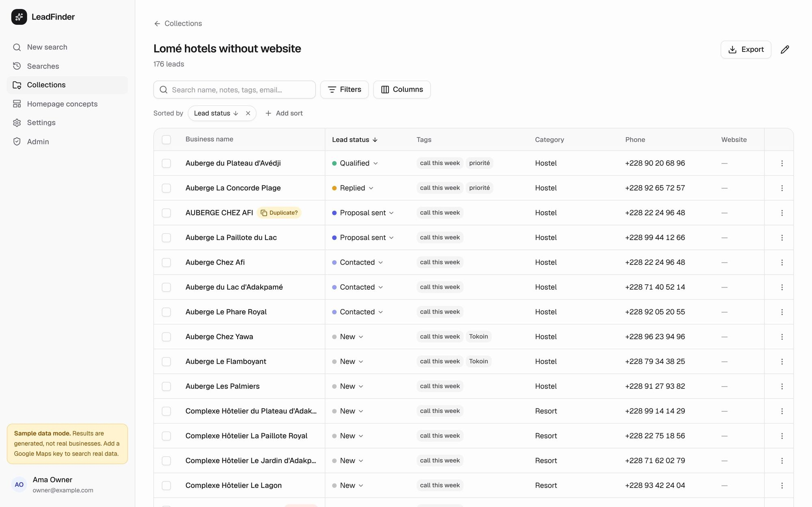
Une collection triée par statut : le statut et les tags se modifient directement dans le tableau.
Les statuts
Statut
Quand l’utiliser
New
Prospect pas encore contacté.
Contacted
Premier contact fait (appel, message).
Proposal sent
Proposition envoyée — mis automatiquement quand vous marquez une proposition comme envoyée.
Replied
Le prospect a répondu.
Qualified
Intéressé, projet sérieux.
Won
Devenu client.
Not a fit
Pas intéressé ou pas adapté.
Cliquez sur le statut d’une ligne pour le changer, et sur la colonne Tags pour ajouter ou retirer des étiquettes (« à rappeler », « Tokoin », « priorité »…).
Notes et fiche du prospect
Menu ⋮ → View & edit : en plus de la fiche entreprise, la rubrique Your lead permet de modifier statut, tags et notes (nom du gérant, date de rappel, besoins…). Cliquez sur Save notes.
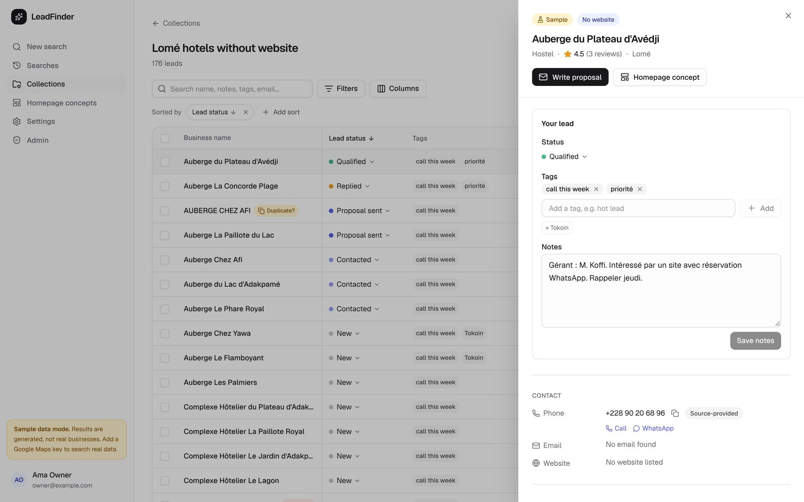
La fiche d’un prospect avec sa note.
Actions groupées
Sélectionnez plusieurs prospects (ou tous ceux qui correspondent aux filtres), puis dans la barre de sélection :
Status : même statut pour tous.
Tags : ajouter, retirer ou remplacer des tags.
Copy / move : copier ou déplacer vers une autre collection (statut, tags et notes suivent).
Remove : retirer de la collection (après confirmation).
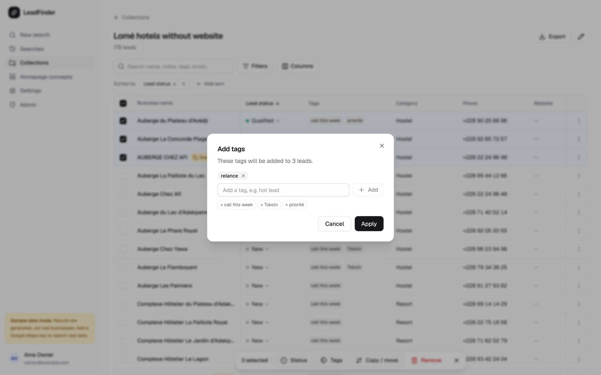
Ajouter le tag « relance » à trois prospects d’un coup.
Prospects issus de Google
Pour respecter les conditions de Google, le nom, le téléphone et l’adresse ne sont pas stockés : ils sont rechargés en direct à l’ouverture de la collection. Si votre limite mensuelle de requêtes est atteinte, un message l’indique et ces champs restent vides jusqu’au mois suivant ; vos statuts, tags, notes et les e-mails trouvés sur les sites restent visibles.
08Écrire une proposition
Depuis une ligne (menu ⋮ → Write proposal) ou une fiche, LeadFinder rédige un message personnalisé que vous pouvez modifier puis envoyer par e-mail ou WhatsApp.
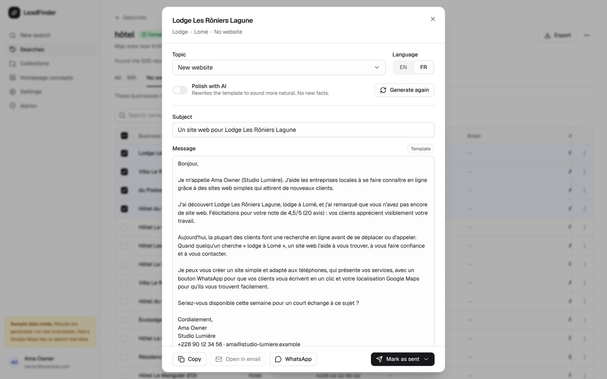
Une proposition « New website » en français, avec les faits utilisés.
Topic (sujet) : New website (création de site, proposé par défaut si l’entreprise n’en a pas), Website redesign (refonte), Local Google ranking (visibilité locale sur Google), Social media, Branding ou My own service (votre propre offre, à décrire).
Language : EN ou FR.
Polish with AI (si l’IA est configurée) : rend le texte plus naturel sans ajouter d’informations. Sinon, un modèle de texte soigné est utilisé.
Relisez et modifiez l’objet et le message. La liste Facts used montre les seules informations sur l’entreprise utilisées : rien n’est inventé.
Envoyez : Copy (copier), Open in email (ouvre votre messagerie avec le message prêt — disponible si un e-mail a été trouvé) ou WhatsApp (ouvre WhatsApp avec le message — si le téléphone est valide).
Cliquez sur Mark as sent et indiquez comment vous l’avez envoyé. Pour un prospect de collection, le statut passe à Proposal sent.
Avant d’envoyer
Complétez vos paramètres : votre nom, votre agence, votre téléphone et votre site forment la signature (chapitre 11). Si vous avez partagé une maquette pour cette entreprise, son lien est ajouté automatiquement. Les e-mails trouvés sur les sites ne sont pas vérifiés : relisez et personnalisez toujours le message.
09Créer une maquette de page d’accueil
Pour une entreprise sans site, montrez-lui à quoi pourrait ressembler son site : LeadFinder génère une page d’accueil complète (textes, sections, couleurs) que vous pouvez lui envoyer par lien.
Créer la maquette
Sur une entreprise sans site : menu ⋮ → Draft a homepage concept (ou bouton Homepage concept dans la fiche).
Vérifiez les coordonnées pré-remplies (nom, téléphone, WhatsApp, adresse) : ce sont celles qui figureront sur la maquette.
Listez les services (un par ligne), choisissez le style (moderne, minimal, élégant, audacieux, ludique, naturel), le ton, la couleur principale (ou automatique), la langue et les sections à inclure.
Cliquez sur Generate. Avec l’IA, les textes sont rédigés sur mesure ; sinon un modèle de qualité est utilisé.
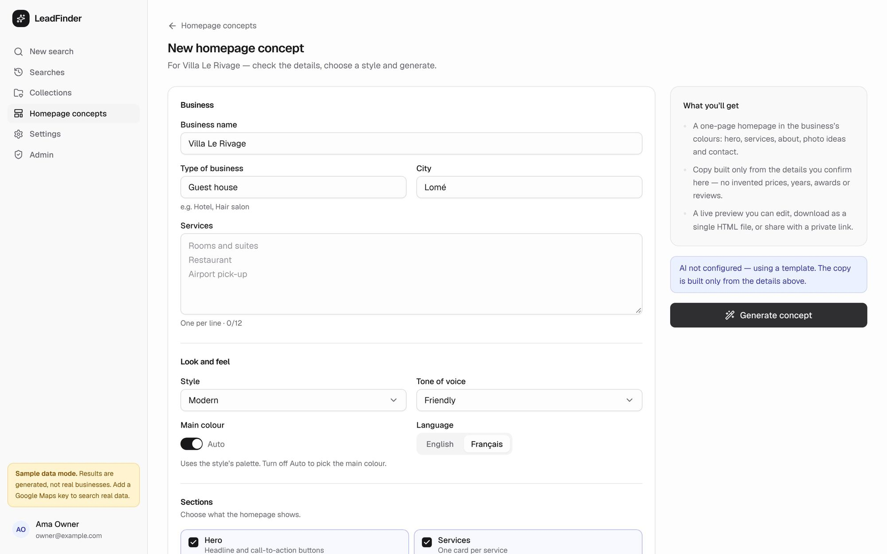
Le formulaire de création, pré-rempli à partir de l’entreprise.
Modifier, prévisualiser, partager
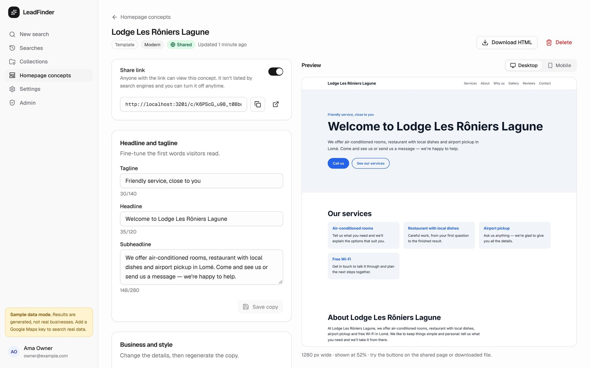
L’éditeur : réglages à gauche, aperçu à droite (Desktop / Mobile).
Desktop / Mobile : aperçu sur ordinateur ou téléphone.
Headline and tagline : retouchez l’accroche, le titre et le sous-titre, puis Save copy.
Business and style : changez les services ou le style puis régénérez.
Share link : activez le partage pour obtenir un lien privé à envoyer au prospect (non référencé par les moteurs de recherche, désactivable à tout moment).
Download HTML : télécharge la page pour la reprendre dans votre outil de création de site.
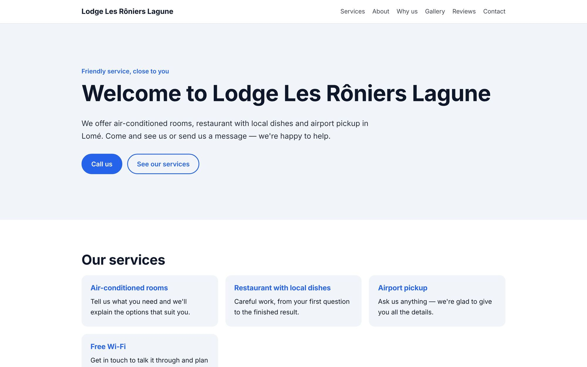
Ce que voit le prospect en ouvrant le lien partagé.
Toutes vos maquettes sont listées dans le menu Homepage concepts.
Honnêteté du contenu
Les maquettes ne contiennent ni faux chiffres, ni faux avis clients : les zones d’avis et de photos sont clairement indiquées comme emplacements à compléter.
10Exporter vers Excel ou CSV
Depuis une recherche ou une collection, le bouton Export télécharge vos données dans l’ordre de tri affiché.
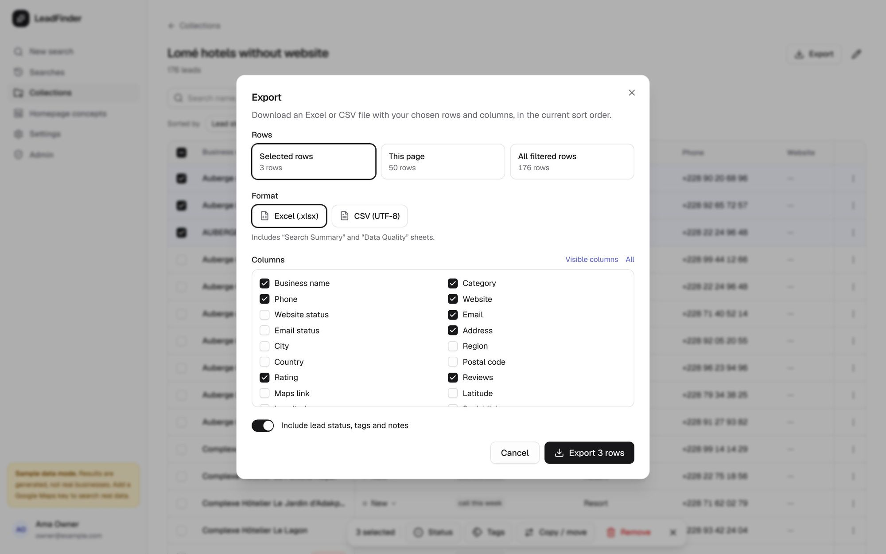
Choix des lignes, du format et des colonnes.
Rows : les lignes sélectionnées, la page affichée, ou toutes les lignes filtrées (jusqu’à 20 000).
Format : Excel (.xlsx) avec trois feuilles — Business Data (les données, avec filtres et en-tête figé), Search Summary (la recherche, les filtres, la date) et Data Quality (champs manquants, doublons, exclusions) — ou CSV (UTF-8, accents préservés).
Columns : les colonnes visibles, toutes, ou votre choix. Dans une collection, l’option Include lead status, tags and notes ajoute votre suivi.
Cliquez sur Export. Les petits exports se téléchargent tout de suite ; les gros sont préparés en arrière-plan.
Les numéros de téléphone gardent leur « + » et les zéros initiaux.
Le lien de téléchargement expire au bout de 15 minutes ; rouvrez l’export si besoin.
Pour les lignes issues de Google, les conditions de Google ne permettent pas d’exporter le nom, le téléphone, l’adresse ou la note : ces cellules restent vides et la feuille Data Quality l’explique. Le lien Google Maps, les e-mails trouvés sur les sites et vos statuts, tags et notes sont exportés.
11Vos paramètres
Menu Settings : les informations qui signent vos propositions et votre langue par défaut.
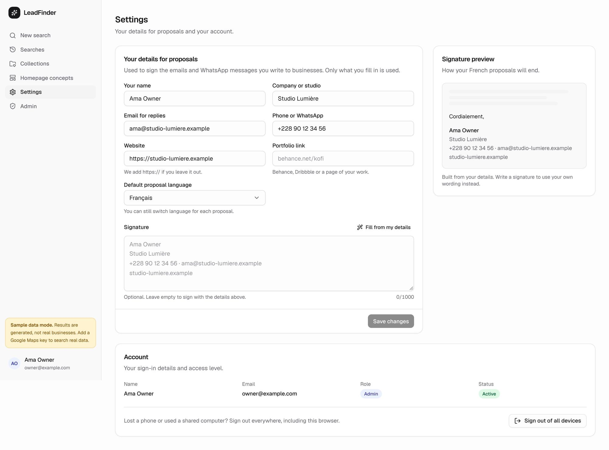
Vos coordonnées pour les propositions, avec l’aperçu de la signature.
Sign out of all devices : déconnecte vos autres sessions (ordinateur oublié, téléphone perdu…).
Le menu en bas à gauche (votre nom) permet aussi de choisir le thème clair, sombre ou automatique et de vous déconnecter.
12Administration
Réservé aux administrateurs : menu Admin.
Users — les utilisateurs
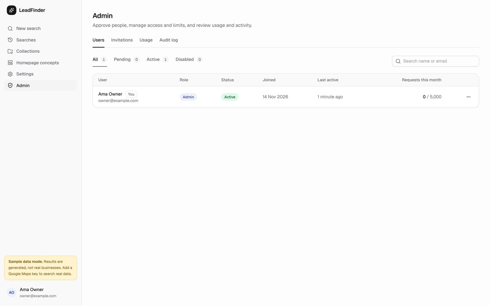
Les utilisateurs, leur rôle, leur statut et leurs requêtes du mois.
Approve : approuver une inscription en attente (Pending).
Disable / Enable : désactiver ou réactiver un compte. Une personne désactivée est déconnectée partout et ses recherches en cours sont arrêtées.
Make admin / Make member : changer le rôle. Vous ne pouvez pas modifier votre propre compte ni retirer le dernier administrateur.
Set limits : nombre maximal de résultats par recherche et de requêtes Google par mois pour cette personne.
Invitations
Saisissez l’e-mail et le rôle, cliquez sur Create invitation, puis copiez le lien d’invitation personnel et envoyez-le à la personne (e-mail, WhatsApp…). Ce lien n’est affiché qu’une fois ; s’il est perdu, révoquez l’invitation et créez-en une nouvelle.
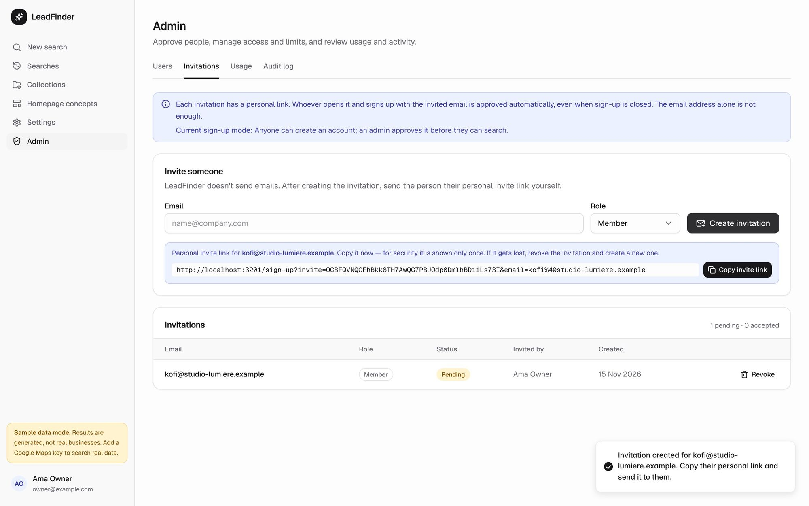
Une invitation créée : le lien personnel est prêt à être copié.
Usage et Audit log
Usage montre les requêtes Google facturables et le coût estimé par personne et par mois (la facture réelle est celle de Google Cloud). Audit log trace les actions importantes : recherches, enregistrements, exports, téléchargements, changements d’administration.
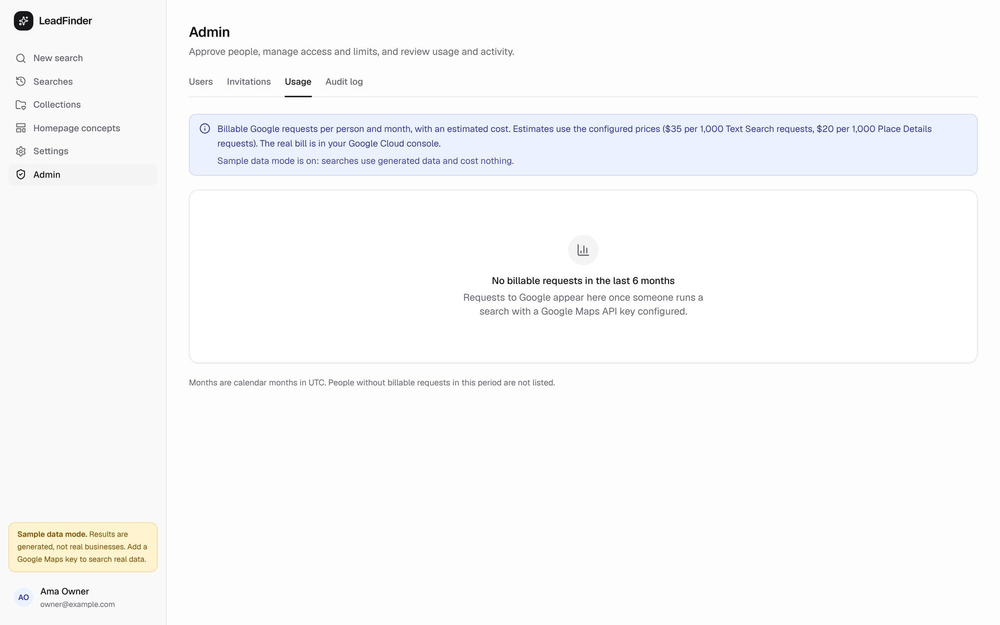
La consommation par utilisateur et par mois.
13Bonnes pratiques et questions fréquentes
Sur téléphone
LeadFinder fonctionne dans le navigateur du téléphone : menu ☰ en haut à gauche, tableaux défilant horizontalement, fiches en plein écran. Pratique pour appeler ou écrire sur WhatsApp directement depuis la fiche.
Prospecter de façon responsable
N’utilisez que les coordonnées professionnelles publiées par l’entreprise.
Présentez-vous clairement et respectez immédiatement toute demande de ne plus être contacté (passez le prospect en Not a fit).
Respectez les lois sur les données personnelles de votre pays et de celui du prospect.
Envoyez des messages personnalisés plutôt que des envois en masse.
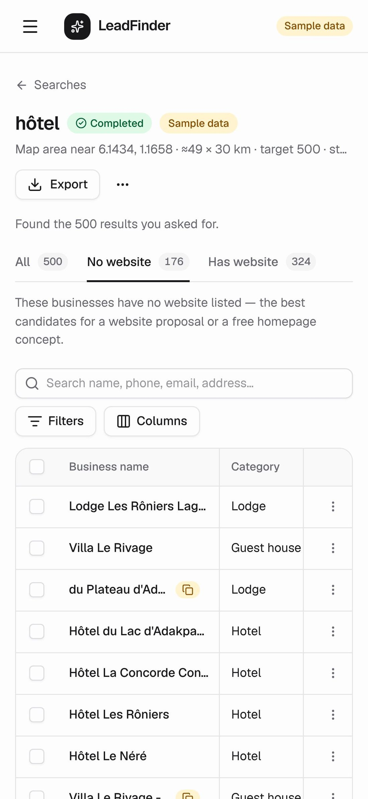
LeadFinder sur téléphone.
Questions fréquentes
Question
Réponse
Pourquoi moins de résultats que demandé ?
La zone ne contient pas plus d’entreprises de ce type, ou la recherche a atteint sa limite de requêtes. Élargissez la zone sur Google Maps ou changez de mot-clé.
Pourquoi pas d’e-mail pour la plupart des entreprises ?
Beaucoup de petites entreprises ne publient pas d’e-mail sur leur site, ou n’ont pas de site. LeadFinder n’invente jamais d’adresse : utilisez le téléphone ou WhatsApp.
« This link shows a map but no search »
Le lien montre une carte sans recherche : tapez un mot-clé sur Google Maps avant de copier le lien, ou indiquez-le dans le champ proposé.
Ma recherche reste sur « Queued »
Le service d’arrière-plan ne tourne pas : prévenez votre administrateur.
Mes résultats ont disparu
Les résultats Google sont supprimés après 24 heures. Les prospects enregistrés dans une collection restent.
« Not stored » dans une collection
Donnée Google non conservable, rechargée en direct si la clé Google fonctionne et que votre limite mensuelle n’est pas atteinte.
Le bouton « Open in email » est grisé
Aucun e-mail n’a été trouvé sur le site de l’entreprise. Copiez le message pour l’envoyer autrement.
Le lien de téléchargement ne marche plus
Il expire après 15 minutes : rouvrez l’export depuis la même page.
« Too many requests »
Trop d’actions en peu de temps : patientez une minute.
Connexion : « Too many sign-in attempts for this account »
Plus de 10 tentatives en 15 minutes sur ce compte : patientez 15 minutes, ou demandez à l’administrateur de réinitialiser votre mot de passe.
Connexion : « …a problem on the server… »
Le serveur ne joint pas sa base de données. Ce n’est pas votre mot de passe : prévenez l’administrateur.
Une donnée semble fausse
Les informations viennent de Google ou du site de l’entreprise et peuvent être anciennes. Vérifiez sur Google Maps (lien dans la fiche) et notez la correction dans les notes du prospect.